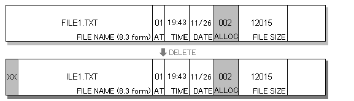
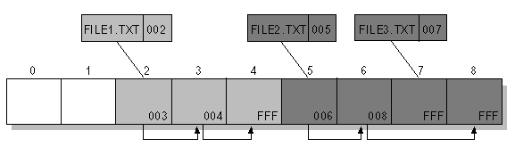

MS-DOSやWindows95/98で採用されているFATファイルシステムの構造は次のようになっています。（なお、Windows95でのVFAT等の拡張の説明は省略しています）

フォルダ（DOSではディレクトリという）は、ディレクトリ属性の付いた特別なファイルで、上の図のような固定長リストによりファイルを管理しています。
一つのファイルを管理するために、ファイル名（DOSの8.3形式）、属性（読取専用、隠し、システム、ディレクトリ、ディスクラベルなど）、変更時間、変更日付、アロケーション･テーブルへのポインタ、ファイル･サイズ（バイト単位）、その他のデータを保持しています。
ファイルを消去すると、ファイル名の先頭に「無効」を示す１バイト(E5H)が書き込まれ、このファイルは消去されたと（オペレーティング･システムでは）認識します。同時に、ファイルのデータ領域を管理しているアロケーション・テーブルも初期化されます。（ゼロが代入される）
この「無効」を宣告された削除済みファイルデータは、ファイル名の先頭１文字だけが欠落しているだけなので、削除されたファイルであっても先頭１文字を適当に決めてやれば復活できます。
また、アロケーション・テーブルの先頭は、この「無効」ファイル・リストに残っていますので、連続したファイル領域であれば復活できます。
実際にファイルＦＩＬＥ１．ＴＸＴを復活する方法は…
削除済みのファイルより？ＩＬＥ１．ＴＸＴの先頭1文字をＦと変更します。
次にアロケーション・テーブルの先頭へのポインタが「００２」のときは、００２、００３、００４が一つながりのファイルであったと推測して、削除済みの０００を００３、００４、ＦＦＦに変更します。(なお、ファイルサイズがこの3つのクラスタより大きい場合は、空いているクラスタを探してリストをつなげてゆきます。)

完全削除は、次の2通りの方法で行われています。
①ファイル・リストを意味の無いものに書き換える。（ファイル・サイズ、アロケーション・テーブルへのポインタを意味の無いデータとする処理）
②ファイル・データ（実際のファイルの内容で、表計算やワープロ文書）そのものを意味の無いデータに書き換えてから消去する。
①により、どんなファイルが削除されたかわかりにくくし、仮に、アロケーション・テーブルへのポインタを他のファイルから推測したとしても、②の処理により意味の無いデータした取り出せないということになります。